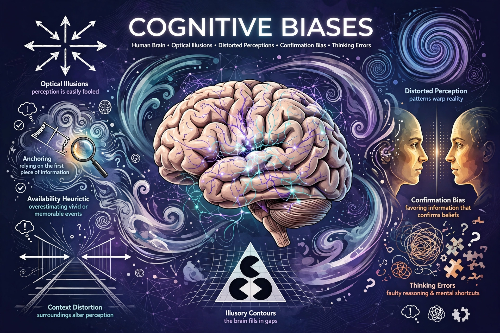

List of cognitive biases

Cognitive biases are systematic patterns of deviation from norm or rationality in judgment.
Cognitive biases are systematic patterns of deviation from norm and/or rationality in judgment. Individuals create their own subjective reality from their perception of the input. The list below collects well-studied biases from psychology and behavioural economics.
Selected biases
- Anchoring — relying too heavily on the first piece of information.
- Availability heuristic — overestimating likelihood of easily recalled events.
- Confirmation bias — seeking information confirming prior beliefs.
- Dunning–Kruger effect — low-ability individuals overestimating competence.
- Hindsight bias — seeing past events as predictable.
- Loss aversion — losses loom larger than equivalent gains.
- Framing effect — different reactions to the same choice by presentation.
- Sunk cost fallacy — continuing because of prior investment.
- Bandwagon effect, status quo bias, negativity bias, optimism bias, fundamental attribution error, halo effect, in-group bias, recency bias, base rate fallacy, gambler's fallacy, planning fallacy, choice overload, survivorship bias.
Study
Amos Tversky and Daniel Kahneman's heuristics-and-biases programme from the 1970s founded much of the field. Biases are debated: some reflect adaptive heuristics rather than errors. See Cognitive bias.